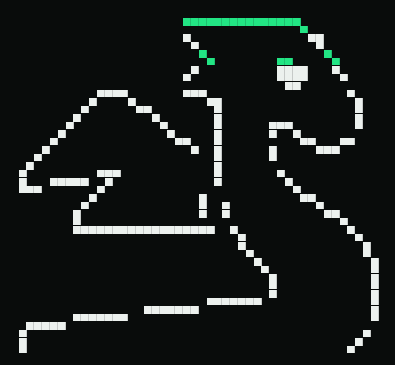
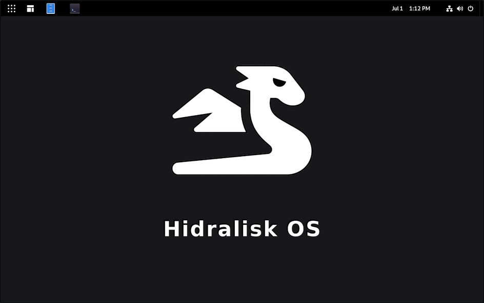

Un Linux inmutable y endurecido de fábrica. Instalá, booteá, trabajá — sin miedo a romperlo.
inmutable · seguro de fábrica · open source (MIT)
v0.1.1 · verificada end-to-end · construida sobre Vanilla OS 2
// 01 · CERO PUERTOS
SSH apagado. Firewall cerrado. Cero puertos abiertos. Así sale de fábrica: recién instalada, tu máquina no expone nada a la red. Si necesitás SSH, lo prendés con dos comandos — y arranca ya endurecido (PermitRootLogin no).
La superficie de ataque más chica es la que no existe.
// 02 · INMUTABLE
El sistema base es de solo lectura. Cada update es atómico: entra completo o no entra. ¿Salió mal? Rollback automático al estado anterior (ABRoot A/B).
sistema actual — intacto, booteable
acá aterriza el update — si falla, ni te enterás
Nunca más «se me murió el sistema por un update».
// 03 · SEGURO DE FÁBRICA
No es un checklist que aplicás después de instalar. Ya viene puesto.
// 04 · SE AUDITA SOLO
hidrafetch, hecho para esto: abrís la terminal y sabés exactamente qué tan blindado está tu sistema. Solo stdlib de Python, sin dependencias.

// 05 · LISTO PARA USAR
Escritorio tipo Mint: barra y menú donde los esperás. zsh + Starship, Ptyxis como único terminal, tema oscuro, sudo listo. Todo por defecto, nada para configurar.

// 06 · CÓMO SE HIZO
Imagen de sistema propia (OCI, construida con Vib sobre Vanilla OS 2) → ISO instalable → hardening y branding de punta a punta. Todo reproducible, todo en GitHub.
Lo hice para aprender cómo se construye una distro de verdad. Resultado: instala, bootea, anda.
// DESCARGA
La ISO va partida en dos (GitHub limita cada archivo a 2 GiB). Bajás las dos partes, las unís con un comando y flasheás. Los links siempre apuntan al último release.
Las tres cosas al mismo directorio.
cat HidraliskOS-*-amd64.iso.part* > HidraliskOS-amd64.iso
En Windows: copy /b parte00+parte01 HidraliskOS-amd64.iso
sha256sum -c SHA256SUMS.txt
Tiene que dar OK para la ISO completa.
Con Ventoy, balenaEtcher o dd. Booteá el USB (UEFI) y seguí el instalador.
Requisitos: x86_64 (amd64) · UEFI · 4+ GB RAM · ~40 GB de disco · conexión a internet durante la instalación (el instalador descarga la imagen del sistema).
hidra / contraseña hidra. Cambiala apenas entres con passwd. SSH viene apagado, así que esas credenciales no dan acceso remoto. El autologin aplica solo a la instalación inicial.